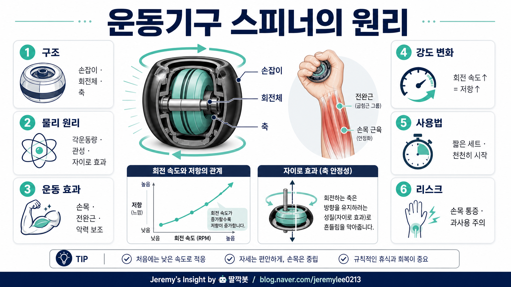

260505 운동기구 스피너 원리 보고서모드3

> 버전: 보고서모드3
핵심 결론
- 🌀 스피너 운동기구는 회전 관성이 손목 움직임에 저항을 만들며 운동이 되는 구조임
- 💪 속도가 빨라질수록 손목·전완근이 방향을 계속 잡아야 해서 강도가 올라감
- ⚠️ 작지만 자극이 강해 손목 통증이 있으면 짧게 쓰고 바로 중단해야 함
1. 스피너 운동기구는 무엇인가
운동기구 스피너는 손으로 잡고 안쪽 회전체를 돌리면서 손목과 전완근에 자극을 주는 기구다.
겉보기에는 작은 공이나 원형 장난감처럼 보이지만, 내부에는 빠르게 도는 회전체가 있다.
이 회전체가 방향을 유지하려고 버티는 힘이 생기고, 사용자는 그 힘을 손목과 팔로 계속 제어하게 된다.
2. 핵심 원리: 관성과 각운동량
스피너의 핵심은 회전하는 물체가 자기 회전 방향을 유지하려는 성질이다.
이를 쉽게 말하면 “빙글빙글 도는 물체는 갑자기 방향을 바꾸기 싫어한다”는 뜻이다.
| 개념 | 쉬운 설명 | 운동에서 느껴지는 감각 |
|---|---|---|
| 관성 | 움직임을 유지하려는 성질 | 손목 방향을 바꾸면 버팀 |
| 각운동량 | 회전 운동의 양 | 빨리 돌수록 더 강하게 버팀 |
| 자이로 효과 | 회전축이 방향을 유지하려는 현상 | 손목에 묵직한 저항감 발생 |
사용자가 손목을 움직이면 내부 회전체의 방향이 바뀌려 한다.
그때 회전체는 기존 방향을 유지하려고 버티고, 그 버티는 힘을 손목과 전완근이 받아낸다.
3. 왜 속도가 빨라질수록 힘든가
회전체가 천천히 돌 때는 저항이 약하다.
하지만 속도가 빨라지면 각운동량이 커지고, 방향을 바꾸려 할 때 더 강한 저항이 생긴다.
그래서 같은 손목 움직임이라도 회전 속도가 높아질수록 손목과 팔이 더 바빠진다.
핵심은 무게가 아니라 회전이다.
무거운 덤벨처럼 아래로 당기는 힘이 아니라, 손목 방향을 계속 흔드는 회전 저항을 제어하는 운동이다.
4. 어떤 근육에 자극이 가는가
주로 손목과 전완근에 자극이 간다.
- 손목 굽힘·폄 근육
- 전완 회전 관련 근육
- 악력 보조 근육
- 손목 안정화 근육
특히 손목을 고정하고 작은 방향 변화를 버티는 과정에서 안정화 근육이 계속 일한다.
다만 근육을 크게 키우는 주운동이라기보다는 손목 컨트롤, 전완 지구력, 악력 보조에 가까운 성격이다.
5. 사용법
처음에는 짧고 약하게 시작하는 것이 좋다.
| 단계 | 방법 |
|---|---|
| 1단계 | 낮은 속도로 회전 시작 |
| 2단계 | 손목을 작게 원 그리듯 움직임 |
| 3단계 | 20~30초 짧게 사용 |
| 4단계 | 통증 없으면 세트 반복 |
| 5단계 | 익숙해진 뒤 속도와 시간 증가 |
처음부터 빠르게 돌리거나 오래 버티려고 하면 손목에 부담이 갈 수 있다.
6. 반대의견과 리스크
| 리스크 | 설명 | 대응 |
|---|---|---|
| 손목 과사용 | 작은 관절에 반복 저항이 집중됨 | 짧은 세트로 시작 |
| 통증 악화 | 기존 손목 통증이 있으면 자극이 부담될 수 있음 | 통증 시 즉시 중단 |
| 운동 효과 과대평가 | 전신 운동이나 근비대 운동은 아님 | 보조 운동으로 사용 |
| 자세 불안정 | 팔꿈치와 어깨까지 긴장할 수 있음 | 힘 빼고 작은 움직임 유지 |
스피너는 작지만 자극이 은근히 강하다.
재활 목적이나 통증이 있는 경우에는 전문가 조언 없이 무리하면 안 된다.
최종 판단
스피너 운동기구는 내부 회전체의 관성과 자이로 효과를 이용해 손목과 전완근에 저항을 주는 기구다.
속도가 빨라질수록 회전체가 방향 변화를 더 강하게 버티기 때문에 운동 강도가 올라간다.
다만 손목 관절에 부담이 갈 수 있으므로 짧게, 천천히, 통증 없이 사용하는 것이 핵심이다.
Jeremy's Insight by 🤖 딸깍봇 https://blog.naver.com/jeremylee0213